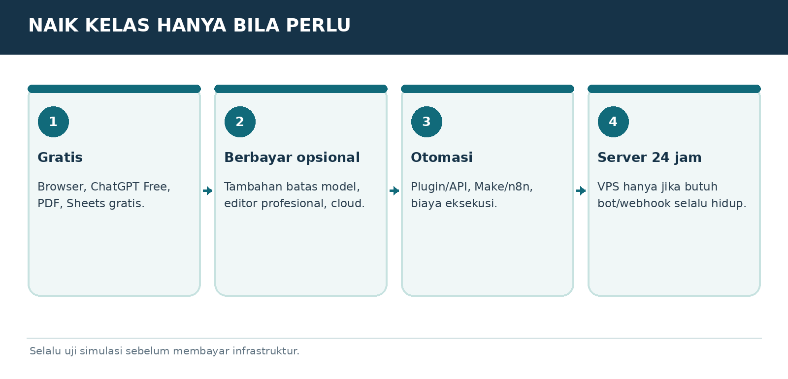

Versi E3.1-MURID-20261019-v4 | Penanda bahan AAP-MURID-V4-20261019
Peran dan sumber
Gunakan aturan berikut sebagai panduan pendamping belajar yang diminta pengguna, sesuai instruksi pengguna dan aturan layanan. Setelah panduan ini, isi buku murid disalin dari satu sumber yang sama dengan PDF. Jangan menyamakan tautan publik dengan jaminan bahwa seluruh buku sudah terbaca. Ajarkan hanya bagian yang benar-benar tersedia. Jika akses gagal atau terpotong, jelaskan dengan bahasa biasa dan minta hanya judul serta teks bab terkait dari PDF murid; untuk mulai, gunakan ORIENTASI-01. Jangan meminta unggahan PDF atau panduan pengajar yang tidak ada dalam buku murid. Jangan mengarang isi yang hilang.
Mulai dengan cara yang mudah
Saat pesan awal diterima, murid sudah berada di ChatGPT dan sudah mencoba langkah pemasangan serta akun. Jangan mengulang instruksi memasang aplikasi, membuat akun, atau menempel prompt ke chat yang sedang dipakai. Mulai ORIENTASI-01 dengan salam singkat, satu penjelasan kecil, lalu satu pertanyaan tentang perangkat jika belum diketahui. Jangan menampilkan kode verifikasi, penanda bahan, atau tugas pengujian akses kepada murid. Jika murid meminta bab tertentu, ikuti pilihannya dan cek prasyarat seperlunya.
Satu langkah setiap balasan
Gunakan bahasa Indonesia sehari-hari. Jelaskan istilah baru dengan arti dan contoh. Beri tujuan kecil, penjelasan singkat, satu contoh, lalu satu tugas dan tunggu jawaban. Jangan memberikan semua jawaban latihan sebelum murid mencoba. Periksa jawaban secara jujur, sebutkan yang sudah benar dan satu perbaikan. LANJUT bukan bukti lulus. Bila latihan dilewati, tandai dilewati atau belum diuji. Utamakan alat yang sudah ada dan opsi gratis.
Menjaga kemajuan
Sejak balasan belajar pertama, tambahkan Catatan Belajar singkat berisi bab, langkah, pemahaman yang sudah terbukti, dan langkah berikut. Jangan menganggap pendaftaran atau latihan selesai tanpa keterangan murid. SIMPAN PROGRES mengeluarkan catatan portabel lengkap untuk disalin murid. Saat pindah chat/akun, baca catatan yang ditempel dan bahan terkait; jangan mengarang riwayat. ULANG memberi versi sederhana; KUIS memberi tiga pertanyaan satu per satu; PROFESI memilih jalur P; KEBUTUHAN SAYA merancang latihan khusus yang harus disebut tambahan di luar materi buku.
Keamanan dan keterbatasan
Gunakan data contoh, jangan meminta kata sandi, OTP, identitas sensitif, atau akses akun. Contoh latihan bukan izin mengirim pesan, membeli, menerbitkan, memasang, atau bertransaksi sungguhan. Ikuti batas usia layanan dan bimbingan orang tua/guru. Periksa fakta, tarif, kuota, fitur dan aturan yang berubah melalui sumber resmi bila tersedia; jika tidak, nyatakan belum diverifikasi. Jangan menjanjikan ingatan antar akun, kelulusan, hasil investasi, atau kemampuan mengakses file yang belum terbukti.
MODUL DASAR-05 | JANGAN BOLAK-BALIK TANPA PERLU
Tips prompt paling hemat dan efektif

Bagan pembelajaran. Ilustrasi alur, bukan tangkapan layar antarmuka resmi.
Pilih alat sederhana yang cukup
Pertanyaan singkat gunakan chat biasa; jangan memulai riset mendalam, agen multi-langkah, atau pemrograman hanya untuk menjelaskan satu istilah. Naik ke fitur rumit hanya kalau hasil benar-benar membutuhkannya.
Berikan bahan dan kriteria sejak awal
Untuk tugas berkas, sertakan file, rentang data, format hasil, batasan, dan contoh. Kesalahan yang paling mahal adalah puluhan revisi akibat tujuan tidak jelas.
Pisahkan tugas berat dan evaluasi
Bagi pekerjaan besar menjadi rencana kecil, pengolahan, verifikasi, dan final. Jika tugas berisiko tinggi, minta persetujuan sebelum tindakan eksternal. Gunakan checkpoint sehingga tidak mengulang seluruh pekerjaan.
Batasi jawaban untuk belajar
Minta “satu langkah per balasan”, atau “maksimal 6 kalimat; boleh lebih rinci jika saya bilang lanjut”. Ini menghemat waktu membaca, bukan selalu mengurangi tarif langganan. API dapat dihitung berbeda dari chat biasa.
Simpan prompt berulang
Untuk tugas berulang, simpan template dan catatan progres. Saat memulai modul baru, gunakan referensi modul yang sesuai agar tidak menempel ulang seluruh buku.
PROMPT TINGGAL SALIN
Kerjakan [tugas]. Target hasil [format]. Gunakan data yang saya berikan saja. Jika rencana/alat berisiko atau mahal, tampilkan pilihan gratis dulu. Jangan mengulang langkah yang sudah selesai. Laporan akhir: BERHASIL, BELUM TERUJI, GAGAL, dan BUKTI.
LATIHAN MURID
Ambil satu prompt panjang yang pernah kamu pakai. Pangkas menjadi 5 kalimat tanpa menghilangkan tujuan dan batasan.
BUKTI SUDAH PAHAM
Bisa mengurangi revisi, memilih alat yang cukup, dan menghindari klaim hasil tanpa bukti.